,
,В настоящем параграфе рассматриваются простейшие способы приближенного вычисления определенных интегралов
,основанные на замене интеграла конечной суммой
в которой
 - числовые коэффициенты, а
- числовые коэффициенты, а
 - точки отрезка [a,b] (i=1,2,…n). Предполагаем в дальнейшем, что, по крайней мере,
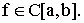 Приближенное равенство
- точки отрезка [a,b] (i=1,2,…n). Предполагаем в дальнейшем, что, по крайней мере,
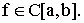 Приближенное равенство
называется квадратурной формулой, точки 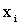 - узлами квадратурной формулы а числа 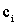 - коэффициентами квадратурной формулы. Величину
будем называть погрешностью квадратурной формулы. Погрешность, очевидно, зависит как от выбора коэффициентов, так и от расположения узлов.
Обсуждаемый ниже материал можно также найти в учебной литературе (см., например, [1, 2, 3]).
Квадратурные формулы составного типа. Рассмотрим квадратурные формулы составного типа. Пусть
- равномерная сетка на отрезке [a,b], отметим, что равномерная сетка нами выбрана для простоты изложения: все последующие рассуждения, с незначительными изменениями, могут быть проведены и для случая произвольной неравномерной сетки. Построение квадратурной формулы составного типа основано на соотношении
| (1) |
с последующим применением к интегралам 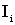 по элементарным сеточным ячейкам так называемых квадратурных формул интерполяционного типа (квадратурные формулы интерполяционного типа будут обсуждаться далее).
Формулы прямоугольников. Функция f(x) в “элементарном” интеграле
 (формула (1)) аппроксимируется интерполяционным многочленом Лагранжа нулевой степени, т.е. константой. Пусть
(формула (1)) аппроксимируется интерполяционным многочленом Лагранжа нулевой степени, т.е. константой. Пусть
- точка отрезка
 , зависящая от параметра
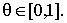. Вышеупомянутый многочлен Лагранжа будет иметь вид:
, зависящая от параметра
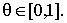. Вышеупомянутый многочлен Лагранжа будет иметь вид:
В силу формулы Тейлора с остаточным членом в форме Пеано:
| (2) |
Интегрируя равенство (2) по ячейке
 и вычисляя интегралы, получим:
и вычисляя интегралы, получим:
Для величины
 очевидна оценка:
очевидна оценка:
из которой (а также из формулы
(1)) следует, что погрешность
 квадратурной формулы прямоугольников может быть оценена следующим образом:
квадратурной формулы прямоугольников может быть оценена следующим образом:
| (3) |
Итак, нами получено «семейство» (при
 ) квадратурных формул прямоугольников, которые имеют вид:
) квадратурных формул прямоугольников, которые имеют вид:
Погрешности этих формул оцениваются неравенством (3).
Формула трапеций. Элементарные интегралы в (1) аппроксимируются с использованием для f(x) интерполяционного полинома Лагранжа первой степени (см. II.(1)):
Известно (см. II.(2)), что:
| (4) |
Интегрируя формулу (4) по ячейке
 , получим:
, получим:
Для 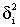 очевидна оценка:
из которой, с учетом (1), получим оценку погрешности квадратурной формулы трапеций:
| (5) |
Сама же квадратурная формула имеет вид:
| (6) |
Формула Симпсона. При аппроксимации интегралов
 для функции f(x) при
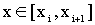 используем интерполяционный полином Лагранжа второй степени, построенный по трем узлам:
для функции f(x) при
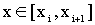 используем интерполяционный полином Лагранжа второй степени, построенный по трем узлам:
Пользуясь формулой II.(1), его несложно найти:
В силу представления II.(2):
| (7) |
Интегрируя (7) по отрезку
 , получим:
, получим:
Для 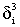 очевидна оценка:
из которой, с учетом (1), следует, что для погрешности квадратурной формулы Симпсона справедливо неравенство:
| (8) |
Сама квадратурная формула Симпсона выглядит следующим образом:
Отметим, что для погрешности квадратурной формулы Симпсона может быть доказана (см., например, [1])более точная, чем (8) оценка:
Квадратурные формулы интерполяционного типа. Квадратурная формула интерполяционного типа получается в результате замены функции f(x) в интеграле
| (9) |
ее интерполяционным многочленом Лагранжа 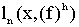 на всем отрезке 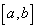. При этом предполагается, что узлы интерполяции
заданы. Итак, вспоминая II.(1), запишем:
| (10) |
где
Подставляя (10) вместо f(x) в (9) получим интерполяционную квадратурную формулу:
| (11) |
в которой коэффиценты
 вычисляются по правилу:
вычисляются по правилу:
Оценим погрешность 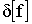 интерполяционной квадратурной формулы (11). Для этого вспомним представление для погрешности интерполяции II.(2):
Эта формула, очевидно, дает:
| (12) |
где
В силу (12) справедливо следующее утверждение: квадратурная формула интерполяционного типа, построеная по “n” узлам, являтся точной для многочленов из пространства 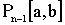. Иными словами, в случае квадратурной формулы интерполяционного типа, построеной по “n” узлам, 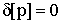 для любого многочлена, степень которого не превосходит n-1.
О сходимости конкретной квадратурной формулы можно сделать вывод лишь изучив поведение величин 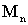 и при в (12). В частности, на классе функций
который упоминался в II., такая сходимость будет иметь место, что и предлагается доказать в качестве несложного упражнения.
Помимо вопросов сходимости, решаемых при помощи оценки (12), для использования квадратурных формул интерполяционного типа важно знать, устойчива ли данная квадратурная формула.
Определение 1. Квадратурная формула (11) называется устойчивой, если для любого «n» выполнено неравенство:
с некоторой константой М, не зависящей от n 
Легко проверить, что в случае, когда все коэффициенты интерполяционной квадратурной формулы положительны – эта квадратурная формула устойчива. Действительно, в этом случае, так как интерполяционная квадратурная формула точна для функции при (это следствие оценки (12)), то:
и условия Определения 1 выполнены.
Поясним смысл понятия устойчивость квадратурной формулы С этой целью рассмотрим квадратурную сумму
и предположим, что в ней величины вычисляются с некоторой погрешностью, то есть вместо точных значений получаем некоторые приближенные:
Тогда вместо получим сумму
которая отличается от точной на величину погрешности
В случае устойчивой квадратурной формулы:
а значит: погрешность , возникающая при вычислении квадратурной суммы имеет тот же порядок, что и максимальная погрешность, допущенная при вычислении значений функции.
Рассмотрим интерполяционную квадратурную формулу (10) в случае равномерного распределения узлов
В этом случае интерполяционная квадратурная формула называется формулой Нъютона-Котеса Выражения для коэффициентов этой формулы упростятся после замены переменной (t=(x-a)/h) под знаком интеграла:
В частности, при n=2 получим:
 - формулу трапеций; для n=3:
;
;
- получим формулу Симпсона. Известно, что в случае
среди коэффициентов формулы Ньютона-Котеса встречаются как положительные, так и отрицательные, то есть для этих значений n нельзя гарантировать её устойчивость в смысле Определения 1.
- формулу трапеций; для n=3:
;
;
- получим формулу Симпсона. Известно, что в случае
среди коэффициентов формулы Ньютона-Котеса встречаются как положительные, так и отрицательные, то есть для этих значений n нельзя гарантировать её устойчивость в смысле Определения 1.
Метод Гаусса вычисления определенного интеграла. Как было показано, произвольная квадратурная формула интерполяционного типа, построенная по “n” узлам, точна на пространстве . Оказывается, за счет выбора узлов квадратурной формулы, можно добиться, чтобы она была точна на более широком пространстве: . Такие квадратурные формулы называются формулами наивысшей алгебраической степени точности, или квадратурными формулами Гаусса Поскольку выбор узлов интерполяционной квадратурной формулы эквивалентен выбору полинома , по которому строятся ее коэффициенты, то достаточно найти этот полином.
Теорема 1. Пусть квадратурная формула (11) - интерполяционного типа и определяется полиномом . Эта формула точна на пространстве тогда и только тогда, когда удовлетворяет условию:
| (13) |
Доказательство . Докажем необходимость условия (13). Так как ), то по условию теоремы:
Тем самым условия ортогональности (13) доказаны.
Докажем достаточность условий (13). Пусть если , то квадратурная формула (11) точна на полиноме p(x), т.к. она интерполяционная, поэтому предложим, что . Тогда по теореме о делении многочленов:
где и . В силу условия (13):
Поэтому:
а значит формула
(10) точна на полиноме p(x), что и требовалось доказать
Вопрос существования и единственности многочлена , удовлетворяющего условием (13) и такого, что его корни лежат на отрезке [a,b], теорема 2, конечно же, не решает. Однако, используя условия (13), легко найти эти многочлены в простейших случаях. Действительно, при n=1, в силу (13), квадратурная формула Гаусса совпадает с формулой прямоугольников «с центральной точкой»
которая точна на пространстве . В случае n=2, можно показать, что
 , , |
(14) |
и квадратура Гаусса, точная на пространстве
 , имеет вид:
, имеет вид:
В общем случае также можно доказать существование и единственность многочлена со свойством (13), это сделано, например, в [4] Такие многочлены называются многочленами Лежандра и могут быть построены по формуле
| (15) |
либо с использованием рекурентного соотношения:
| (16) |
Используя (16) легко найти полином :
Последнее, в частности, подтверждает формулы (13).
Задача
1. Используя формулу интегрирования по частям и представление (15) доказать, что многочлен Лежандра
удовлетворяет условиям ортогональности (13)
Следующие утверждения позволяют сделать некоторые выводы о свойствах многочленов Лежандра и квадратурных формул Гаусса, построенных по этим многочленам.
Теорема 2. Если многочлен удовлетворяет условиям (13), то он имеет “n” различных корней, расположенных на отрезке [a,b].
Доказательство . Полагая в (13) i=0, приходим к соотношению:
из которого следует, что многочлен имеет на отрезке [a,b] по крайней мере один корень нечетной кратности. Рассмотрим все корни нечетной кратности многочлена , расположенные на [a,b] и обозначим их Тогда для справедливо представление:
| (17) |
где - нечетные, а корни многочлена r(x) на отрезке [a,b] могут иметь лишь четную кратность. Рассмотрим многочлен:
если предположить, что m<n, то и в силу (13) имеем:
| (18) |
С другой стороны, в силу (17), все корни многочлена , лежащие на отрезке [a,b] могут иметь лишь четную кратность. Поэтому:
что противоречит соотношению (18). Значит предположение о том, что m<n было неверным. Итак, m=n и корни многочлена
простые, их “n” штук и все они лежат на отрезке [a,b], что и доказывает теорему 2
Теорема
3. Для любого
 коэффициенты ck (k=1,2,...n) квадратурной формулы Гаусса положительны.
коэффициенты ck (k=1,2,...n) квадратурной формулы Гаусса положительны.
Доказательство . Рассмотрим функции
где
 n,k - базисные полиномы интерполяции (см.формулы
(10)). Очевидно, что
и
n,k - базисные полиномы интерполяции (см.формулы
(10)). Очевидно, что
и
Так как для многочленов формула Гаусса точна, то при k=1,2,...n:
что и требовалось доказать
Оценка (12) погрешности интерполяционной квадратурной формулы может быть уточнена в случае формул Гаусса:
| (19) |
Неравенство (18) доказано, например, в [4]; напомним, что
Задача 2. Используя формулу интегрирования по частям и представление (14) для многочленов Лежандра доказать, что
| (20) |
Основываясь на формулах (19) и (20), получить оценку погрешности квадратурной формулы Гаусса:
Задача 3. Используя формулу Стирлинга [5] :
и результат предыдущей задачи доказать, что в случае a=-1, b=1, и (для любого n0), справедливо асимптотическое представление:
Экстраполяция Ричардсона. В настоящем разделе обсудим в общей форме один из методов повышения точности вычислительных алгоритмов. Этот метод обычно называют методом экстраполяции Ричардсона Предположим, что вычисляется некая величина «M», причем базовый вычислительный алгоритм в качестве приближенного значения M дает величину «M(h)», зависящую от некоторого достаточно малого и положительного параметра «h» (обычно это шаг вычислительной сетки). Для реализации метода Ричардсона важно знать структуру погрешности мы будем предполагать, что имеет место следующее представление:
| (21) |
в котором «mi» - некоторые известные величины, удовлетворяющие условиям:
а константы Ci, вообще говоря, не известны. Ряд (21) мы будем использовать формально, предполагая возможность осуществления арифметических операций с его членами. При этом мы не касаемся вопросов, связанных с иследованием его сходимости.
В дополнение к вычислим величину M на сетке с более мелким шагом, равным , в силу (21) получим представление:
| (22) |
Умножим представление (21) на некое число
 , а (22) на число
и сложим результаты. Подчинив числа
, а (22) на число
и сложим результаты. Подчинив числа
 и
и
 условиям:
условиям:
в итоге получим:
| (23) |
Формула (23) говорит о том, что первое слагаемое в (23) аппроксимирует величину M c порядком , что точнее, чем исходный вариант (20). Процесс уточнения аппроксимации для величины M можно продолжить, сделаем это, рассуждая по индукции. Переобозначим: и предположим, что построено k-е уточняющее приближение Mk(h) для величины M, которое удовлетворяет соотношению:
| (24) |
Заметим, что при k=1 и соотношение (24) превращается в (21). Поступим так же, как и при выводе формулы (23): запишем соотношение (24) на сетке с половинным шагом:
| (25) |
рассмотрим линейную комбинацию формул (24) и (25) с весами, удовлетворяющими системе
в результате приходим к соотношению:
| (26) |
Теперь, в силу (26), определим последовательность уточняющих аппроксимаций величины M при помощи рекурентного соотношения
| (27) |
причем, для величин Mk(h) справедливо представление (24), в котором коэффициенты погрешности (см. (26)) удовлетворяют рекурентным соотношениям:
Процесс вычисления величин с использованием формулы (27) удобно представить в виде следующей нижне-треугольной матрицы:
| (28) |
в которой расчет проводится с использованием двух вложенных циклов: внешний - по строкам, а внутренний - по столбцам внутри каждой строки, причем, величины (j=0,1,2,…), стоящие в первом столбце, должны быть предварительно вычислены. Все вышесказанное можно формализовать, используя дополнительные обозначения:
| (29) |
которые трансформируют матрицу (28) к следующему виду:
| (30) |
Здесь: k – число уточняющих шагов в методе Ричардсона, после выполнения всей процедуры, в силу формулы (25), мы сможем гарантировать аппроксимацию порядка O(). Используя формулы (27), (29) и процесс (30), запишем квазиалгоритм для метода экстраполяции Ричардсона.
Алгоритм 1. Позволяет уточнять вычислительный метод в случае известной структуры его погрешности (см. (24)).
INPUT(k; ; входная информация для базового метода M(h));
for i = 1 to k do ;
for i = 2 to k do
for j = 2 to i do ;
;
OUTPUT() 
Вычисление интеграла методом Ромберга. Метод Ромберга основан на применении вышеописанной экстраполяции Ричардсона для вычисления определенного интеграла:
| (31) |
причем в качестве базового вычислительного алгоритма используется составная квадратурная формула трапеций (6):
| (32) |
Исследуя более детально, чем это было сделано в настоящем разделе, структуру погрешности квадратурной формулы трапеций, можно показать, что она имеет вид (21), где Поэтому мы можем воспользоваться Алгоритмом 1, лишь уточнив процедуру вычисления элементов первого столбца в матрице (30). Эта процедура определяется формулой:
| (33) |
которая позволяет не вычислять многократно одни и те же значения функции. Используя теперь (32), (33) и Алгоритм 1, получим базовый алгоритм метода Ромберга.
Алгоритм 2. Позволяет вычислять интеграл (31) с погрешностью порядка O(), где h - шаг сетки базовой формулы (32), а k - число уточняющих шагов. Благодаря убыванию коэффициентов в формуле (24), процесс может стартовать с h=b-a.
INPUT(a,b; n - число узлов базовой формулы
(32); k - число уточняющих шагов экстраполяции Ричардсона ( ));
));
h=
if n=2 then 
;
for i = 1 to k-1 dobegin
 ;
;
end;
for i = 2 to k dofor j = 2 to i do ;
;
Этот алгоритм легко модифицировать следующим образом.
Алгоритм 3. Позволяет вычислять интеграл
(31) с погрешностью порядка O( ), но, в отличие от предыдущего алгоритма использует лишь два одномерных массива
.
), но, в отличие от предыдущего алгоритма использует лишь два одномерных массива
.
INPUT(a,b; n -число узлов базовой формулы
(32); k -число уточняющих шагов экстраполяции Ричардсона ());
h=
if n=2 then
 ;
;
begin 
for j=2 to i do ;
for j=1 to i do ;
;
end;
;
OUTPUT(I)
Недостатком алгоритмов 2 и 3 является то, что они требуют задания числа уточняющих шагов "к". Можно преобразовать эти алгоритмы, встроив в них процедуру определения величины "к" согласно стандартному условию, основанному на Критерии Коши сходимости последовательности [6].
Алгоритм 4. В отличие от предыдущих алгоритмов, не требует задания числа уточняющих шагов экстраполяции Ричардсона, а предполагает введение параметра " ", определяющего погрешность вычисления интеграла.
", определяющего погрешность вычисления интеграла.
INPUT(a,b; n -число узлов базовой формулы
(32);  - погрешность вычисления интеграла (
- погрешность вычисления интеграла ( ));
));
h= ;
;
if n=2 then 
 ;
;
i = 2;
repeat
for j=2 to i do  ;
;
R=Abs();  ;
;
for j=1 to i do  ;
;
 ; i=i+1;
; i=i+1;
until R< ;
;
OUTPUT(I)
Адаптивный метод вычисления интеграла. Предлагаемый в данном разделе адаптивный метод вычисления интеграла базируется на квадратурной формуле трапеций, хотя, как будет понятно из нижеприведенных рассуждений, в качестве базовой может быть выбрана любая из простейших интерполяционных квадратурных формул, например, формула Симпсона. Метод основан на использовании погрешности квадратурной формулы, поэтому детальным ее изучением мы сначала и займемся.
В простейшем случае (два узла: ) формула трапеций (6) имеет следующий вид:
Считая, что и используя представление (4) для рассматриваемого случая получим:
| (34) |
Теорема о среднем для интегралов (см.
[6]; функция - знакопостоянна на [a,b],  ) позволяет погрешность квадратурной формулы трапеций переписать следующим образом:
) позволяет погрешность квадратурной формулы трапеций переписать следующим образом:
 , , |
(35) |
В силу (35), формула (34) перепишется следующим образом:
 , , |
(36) |
где - некоторая точка отрезка [a,b]. По аналогии с (36) легко получим:
| (37) |
| (38) |
Складывая (37) и (38) приходим к соотношению:
| (39) |
Теперь, используя очевидные неравенства:
и свойство непрерывности функции (принимает все значения на отрезке [m,M], см. [6]), доказываем существование некоторой точки , для которой
| (40) |
Представление (40) позволяет переписать (39) в следующем виде:
| (41) |
Сравним представления
(36) и (41), считая, что
 - это единственное допущение, которое может повлиять на точность метода адаптации, заметим, что погрешность этого допущения тем меньше, чем меньше длина отрезка [a,b]. В результате такого сравнения и несложных вычислений находим:
- это единственное допущение, которое может повлиять на точность метода адаптации, заметим, что погрешность этого допущения тем меньше, чем меньше длина отрезка [a,b]. В результате такого сравнения и несложных вычислений находим:
| (42) |
В силу (42) формулу (36) перепишем в виде:
| (43) |
Формулу (43) отличает от (42) то, что в ней величина
 легко вычисляется.
легко вычисляется.
Следующий ниже алгоритм основан на использовании формул (42), (43), а также, очевидным образом получающейся из (42), формулы:
все они используются на элементарных сеточных ячейках .
Алгоритм 5. Позволяет вычислить интеграл
(31) с заданной погрешностью « », используя составную квадратурную формулу трапеций
(6) на неравномерной сетке; автоматически расставляет узлы составной квадратурной формулы, основываясь на величине её «локальной» погрешности .
», используя составную квадратурную формулу трапеций
(6) на неравномерной сетке; автоматически расставляет узлы составной квадратурной формулы, основываясь на величине её «локальной» погрешности .
INPUT(a,b; - погрешность вычисления интеграла (>0));
while i<n do
begin
;
if Abs()< then i=i+1
else
begin
S=S+ ; n=n+1;
; n=n+1;
for k = n downto i+2 do ;
;
for k = n-1 downto i+2 do ;
;
end;
end;
I=S;
OUTPUT(I; n; )
Калиткин Н.Н. Численные методы. Москва «Наука», 1978, -512с.
Самарский А.А. Введение в численные методы. Москва «Наука», 1987, -288с.
Самарский А.А., Гулин А.В. Численные методы. Москва «Наука», 1989, -430 с.
Мысовских И.П. Интерполяционные кубатурные формулы. Москва «Наука», 1981, -336 с.
Фихтенгольц Г.М. Курс дифференциального и интегрального исчисления, том II. Москва «Наука», 1970, -800 с.
Фихтенгольц Г.М. Курс дифференциального и интегрального исчисления, том I. Москва «Наука», 1970, -800 с.
 |